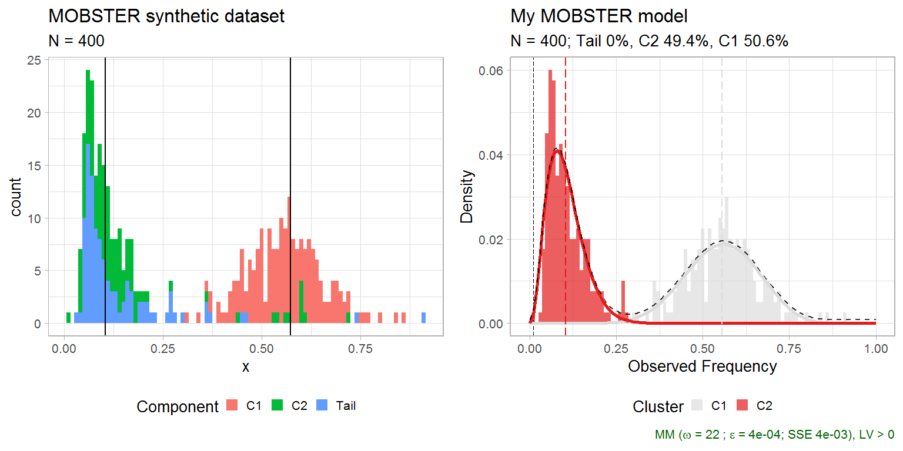
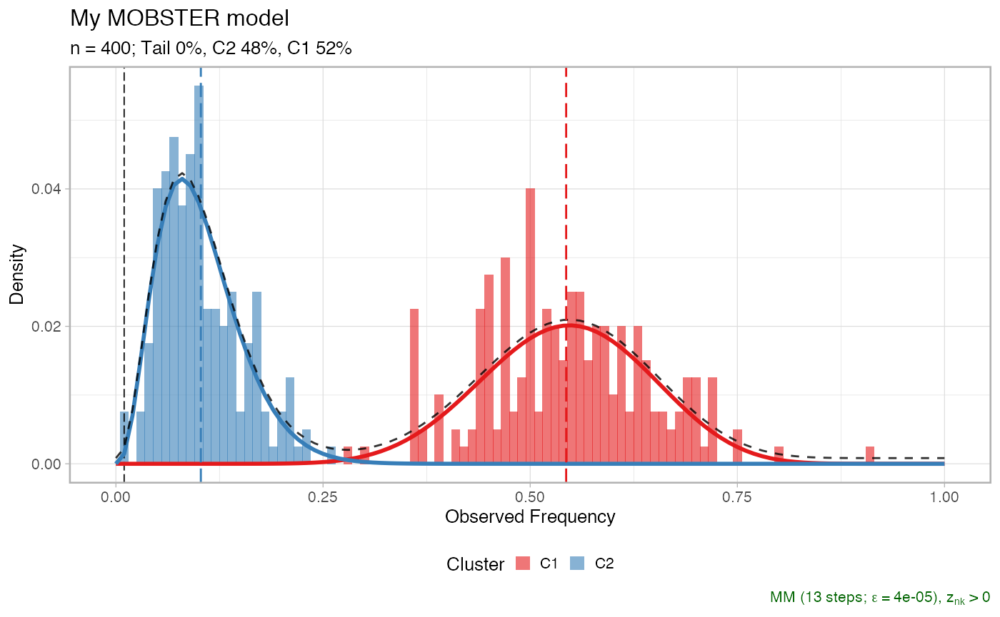
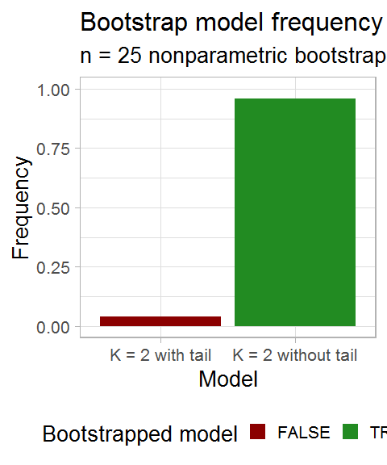
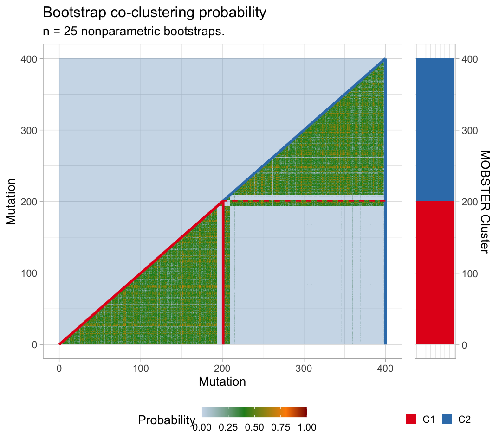

3. Confidence estimation by the bootstrap
Giulio Caravagna
11 mai, 2020
Source:vignettes/a3_bootstrap.Rmd
a3_bootstrap.RmdBootstrapping a model
This vignette describes how to compute the bootstrap confidence of a MOBSTER model.
Both parametric and nonparametric bootstrap options are available: the former samples data from the model, the latter re-samples the data (with repetitions). Statistics are bootstrap estimates (averages) of the bootstrap fits. In both cases a model bootstrap probability can be computed, as well as the probability of clustering together any two mutations.
We show this with a small synthetic dataset .to speed up the computation.
# Data generation dataset = random_dataset( N = 400, seed = 123, Beta_variance_scaling = 100 ) # Fit model -- FAST option to speed up the vignette fit = mobster_fit(dataset$data, auto_setup = 'FAST') #> [ MOBSTER fit ] # Composition with cowplot cowplot::plot_grid( dataset$plot, plot(fit$best), ncol = 2, align = 'h') %>% print

Now we can compute n.resamples nonparametric bootstraps using function mobster_bootstrap, passing parameters to the calls of mobster_fit. This function by defaults runs the fits in parallel (using a default percentage of the available cores); parallel computing capabilities are achieved using package easypar.
# The returned object contains also the list of bootstrap resamples, and the fits. bootstrap_results = mobster_bootstrap( fit$best, bootstrap = 'nonparametric', n.resamples = 25, auto_setup = 'FAST' # forwarded to mobster_fit ) #> [ MOBSTER bootstrap ~ 25 resamples from nonparametric bootstrap ]
The output object includes the bootstrap resamples, the fits and possible error returned by the runs.
# Resamples are available for inspection as list of lists, # with a mapping to record the mutation id of the resample data. # Ids are row numbers. print(bootstrap_results$resamples[[1]][[1]] %>% as_tibble()) #> # A tibble: 400 x 3 #> id VAF original.id #> <int> <dbl> <int> #> 1 1 0.623 93 #> 2 2 0.608 189 #> 3 3 0.564 13 #> 4 4 0.515 175 #> 5 5 0.127 207 #> 6 6 0.515 175 #> 7 7 0.560 79 #> 8 8 0.111 240 #> 9 9 0.388 62 #> 10 10 0.0669 375 #> # ... with 390 more rows # Fits are available inside the $fits list print(bootstrap_results$fits[[1]]) #> -- [ MOBSTER ] My MOBSTER model n = 400 with k = 2 Beta(s) without tail -------- #> * Clusters: p = 52% [C1] and 48% [C2], with p > 0. #> x No tail fit. #> #> * Beta C1 [n = 208, 52%] with mean = 0.54. #> * Beta C2 [n = 192, 48%] with mean = 0.1. #> i Score(s): NLL = -224.35; ICL = -409.54 (-409.54), H = 3.21 (3.21). Fit #> converged by MM in 13 steps. plot(bootstrap_results$fits[[1]]) #> Warning: Unknown or uninitialised column: `Scale`. #> Warning: Unknown or uninitialised column: `Shape`. #> Warning: Unknown or uninitialised column: `Scale`. #> Warning: Unknown or uninitialised column: `Shape`. #> Warning: Unknown or uninitialised column: `Scale`. #> Warning: Unknown or uninitialised column: `Shape`. #> Warning: Unknown or uninitialised column: `Scale`. #> Warning: Unknown or uninitialised column: `Shape`. #> Warning: Unknown or uninitialised column: `Scale`. #> Warning: Unknown or uninitialised column: `Shape`. #> Warning: Unknown or uninitialised column: `Scale`. #> Warning: Unknown or uninitialised column: `Shape`.

Errors of each run are available, if any.
print(bootstrap_results$errors) #> NULL
Bootstrap statistics
Bootstrap statistics can be computed with bootstrapped_statistics.
With nonparametric bootstrap the data co-clustering probability is also computed (the probability of any pair of mutations in the data to be clustered together). Note that this probability depends on the joint resample probability of each pair of mutations (each bootstrapped with probability \(1/n\), for \(n\) mutations).
bootstrap_statistics shows to screen several statistics.
bootstrap_statistics = bootstrapped_statistics( fit$best, bootstrap_results = bootstrap_results ) #> i Computing model frequency #> Warning: `as.tibble()` is deprecated as of tibble 2.0.0. #> Please use `as_tibble()` instead. #> The signature and semantics have changed, see `?as_tibble`. #> This warning is displayed once every 8 hours. #> Call `lifecycle::last_warnings()` to see where this warning was generated. #> # A tibble: 2 x 3 #> Model Frequency fit.model #> <fct> <dbl> <lgl> #> 1 K = 2 without tail 0.96 TRUE #> 2 K = 2 with tail 0.04 FALSE #> v Computing model frequency ... done #> i Confidence Intervals (CI) for empirical quantiles #> #> Mixing proportions #> # A tibble: 3 x 8 #> cluster statistics min lower_quantile higher_quantile max fit.value #> <chr> <chr> <dbl> <dbl> <dbl> <dbl> <dbl> #> 1 C1 Mixing pr~ 0.465 0.472 0.541 0.548 0.506 #> 2 C2 Mixing pr~ 0.376 0.422 0.528 0.535 0.494 #> 3 Tail Mixing pr~ 0 0 0.0579 0.145 0 #> # ... with 1 more variable: init.value <dbl> #> #> Tail shape/ scale #> # A tibble: 2 x 8 #> cluster statistics min lower_quantile higher_quantile max fit.value #> <chr> <chr> <dbl> <dbl> <dbl> <dbl> <dbl> #> 1 Tail Scale 0.0374 0.0374 0.0374 0.0374 NA #> 2 Tail Shape 0.945 0.945 0.945 0.945 NA #> # ... with 1 more variable: init.value <dbl> #> #> Beta peaks #> # A tibble: 4 x 8 #> cluster statistics min lower_quantile higher_quantile max fit.value #> <chr> <chr> <dbl> <dbl> <dbl> <dbl> <dbl> #> 1 C1 Mean 0.538 0.541 0.566 0.568 0.555 #> 2 C1 Variance 0.00803 0.00840 0.0136 0.0150 0.0109 #> 3 C2 Mean 0.0932 0.0956 0.110 0.110 0.104 #> 4 C2 Variance 0.00165 0.00189 0.00320 0.00324 0.00270 #> # ... with 1 more variable: init.value <dbl> #> v Confidence Intervals (CI) for empirical quantiles ... done #> i Co-clustering probability from nonparametric bootstrap v Co-clustering probability from nonparametric bootstrap ... done
Visualising bootstrap results
Object bootstrap_statistics contains tibbles that can be plot with specific mobster functions.
# All bootstrapped values print(bootstrap_statistics$bootstrap_values) #> # A tibble: 279 x 5 #> cluster statistics fit.value init.value resample #> <chr> <chr> <dbl> <dbl> <int> #> 1 C2 a 3.72 0.00348 1 #> 2 C2 b 32.6 0.00348 1 #> 3 C2 Mean 0.103 0.00599 1 #> 4 C2 Variance 0.00246 0.00376 1 #> 5 C1 a 13.0 7.59 1 #> 6 C1 b 10.9 7.59 1 #> 7 C1 Mean 0.543 0.188 1 #> 8 C1 Variance 0.00996 0.00368 1 #> 9 C2 Mixing proportion 0.480 0.5 1 #> 10 C1 Mixing proportion 0.520 0.5 1 #> # ... with 269 more rows # The model probability print(bootstrap_statistics$bootstrap_model) #> # A tibble: 2 x 3 #> Model Frequency fit.model #> <fct> <dbl> <lgl> #> 1 K = 2 without tail 0.96 TRUE #> 2 K = 2 with tail 0.04 FALSE # The parameter stastics print(bootstrap_statistics$bootstrap_statistics) #> # A tibble: 15 x 8 #> cluster statistics min lower_quantile higher_quantile max #> <chr> <chr> <dbl> <dbl> <dbl> <dbl> #> 1 C1 a 8.56 9.50 15.8 16.4 #> 2 C1 b 6.96 7.74 12.6 13.5 #> 3 C1 Mean 0.538 0.541 0.566 0.568 #> 4 C1 Mixing pr~ 0.465 0.472 0.541 0.548 #> 5 C1 Variance 0.00803 0.00840 0.0136 0.0150 #> 6 C2 a 2.92 2.93 4.68 5.53 #> 7 C2 b 25.0 25.4 42.3 48.8 #> 8 C2 Mean 0.0932 0.0956 0.110 0.110 #> 9 C2 Mixing pr~ 0.376 0.422 0.528 0.535 #> 10 C2 Variance 0.00165 0.00189 0.00320 0.00324 #> 11 Tail Mean Inf Inf Inf Inf #> 12 Tail Mixing pr~ 0 0 0.0579 0.145 #> 13 Tail Scale 0.0374 0.0374 0.0374 0.0374 #> 14 Tail Shape 0.945 0.945 0.945 0.945 #> 15 Tail Variance Inf Inf Inf Inf #> # ... with 2 more variables: fit.value <dbl>, init.value <dbl>
Bootstrapping, one can plot the model frequency across re-samples. A model is identified by its mixture components (e.g., 2 Betas plus one tail).
plot_bootstrap_model_frequency( bootstrap_results, bootstrap_statistics )

The bootstrap estimates of the parameters can be visualised.
# Plot the mixing proportions mplot = plot_bootstrap_mixing_proportions( fit$best, bootstrap_results = bootstrap_results, bootstrap_statistics = bootstrap_statistics ) # Plot the tail parameters tplot = plot_bootstrap_tail( fit$best, bootstrap_results = bootstrap_results, bootstrap_statistics = bootstrap_statistics ) # Plot the Beta parameters bplot = plot_bootstrap_Beta( fit$best, bootstrap_results = bootstrap_results, bootstrap_statistics = bootstrap_statistics ) #> Warning: Removed 4 rows containing missing values (geom_bar). #> Warning: Removed 4 rows containing missing values (geom_bar). # Figure figure = ggpubr::ggarrange( mplot, tplot, bplot, ncol = 3, nrow = 1, widths = c(.7, 1, 1) ) #> Warning in max(data$density): no non-missing arguments to max; returning -Inf #> Warning: Computation failed in `stat_ydensity()`: #> replacement has 1 row, data has 0 #> Warning in max(data$density): no non-missing arguments to max; returning -Inf #> Warning: Computation failed in `stat_ydensity()`: #> replacement has 1 row, data has 0 print(figure)

For a nonparametric bootstrap we can plot also the co-clustering probability of the data.
plot_bootstrap_coclustering( fit$best, bootstrap_results = bootstrap_results, bootstrap_statistics = bootstrap_statistics )
